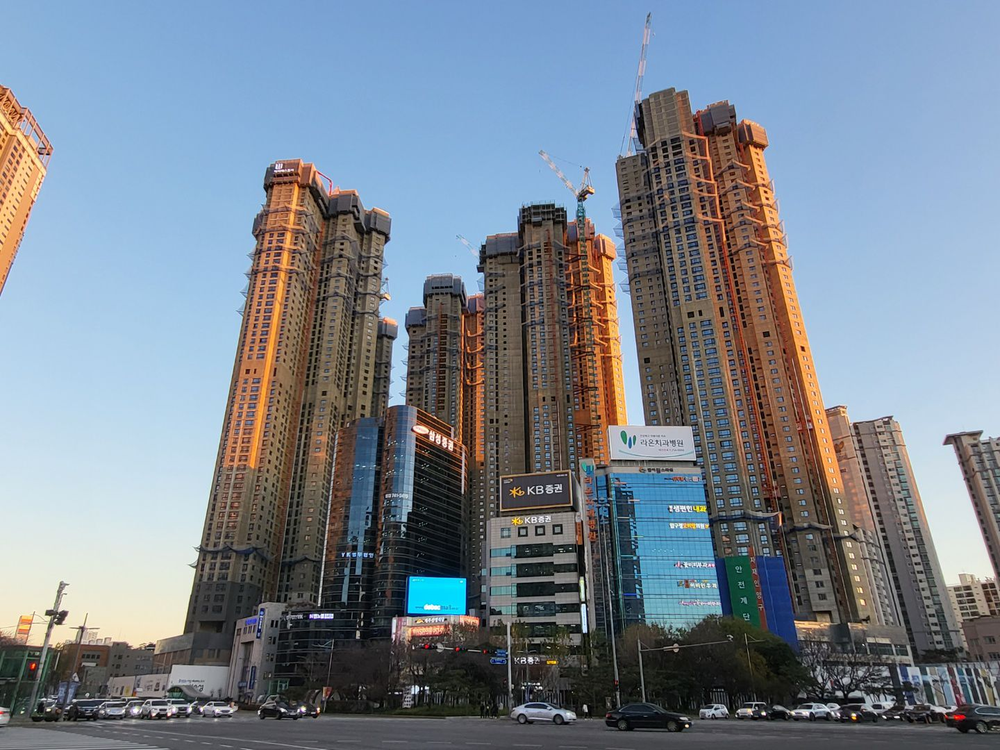

학군지도 무너지는 지방..."비싼데다 경기 변동에 취약"
백윤미 기자
입력 2022.12.29 11:30
수정 2022.12.29
지방 광역시에서 높은 집값을 자랑한 학군지의 아파트값도 하락세를 면치
못하고 있다. 대구 수성구, 부산 해운대구, 대전 유성구 등은 해당 지역
평균보다 더 큰 하락폭을 보이고 있다. 부동산 전문가들은 “수도권에 비해
경기에 취약한 지방 시장의 한계로 더욱 가파르게 하락하는 것”이라고
분석했다.

지난 5일 신축 공사가 진행되고 있는 대구 수성구 범어네거리 일대 전경.
/최온정 기자
29일 한국부동산원에 따르면 12월 셋째주 대구 수성구 아파트값은 1.30%
하락하며 전주(-1.18%)에 비해 낙폭이 확대됐다. 역대 최고 하락 폭이다. 같은
기간 대구 전체 아파트 값은 0.83% 떨어졌다. 대전 유성구 역시 0.95% 떨어져
대전 평균(-0.79%)보다 높은 하락률을 기록했다. 부산 해운대구도 0.91% 하락해
부산 평균(-0.66%)보다 많이 떨어졌다.